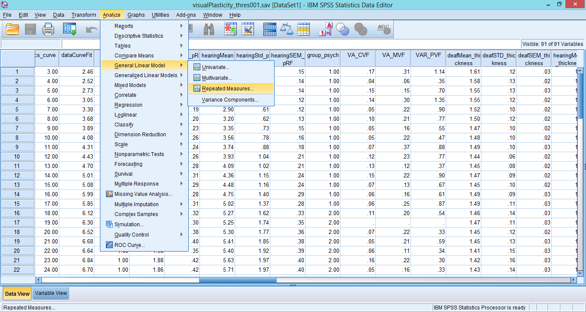
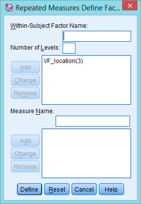
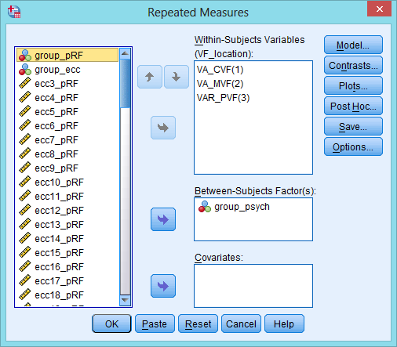
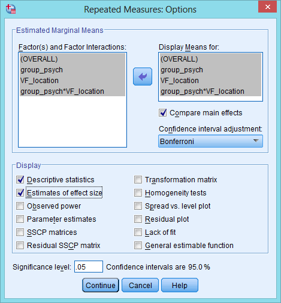

In the main menu, go to Analyze/General Linear Model/Repeated Measures
A dialog box will come up in which you need to specify the within-subjects factors comprising the repeated measures. In this case, there is one such factor, namely the location in the visual field (central, medium and peripheral. We have called this variable VF_location, and indicate it has three levels.
After clicking on "define", the model can be specified. We first need to choose which variables correspond to the three levels of the VF_location variable. These are VA_CVF, VA_MVF, and VAR_PVF, respectively. There is one between-subjects factor, namely group (deaf, hearing). The corresponding variable in the dataset is group_psych and this is entered in the "Between-Subjects Factor(s)" box.
Before running the analysis we can ask for post-hoc tests and other additional output by clicking on the "Options..." button.
